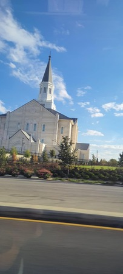

Place 4 - Taylorsville Temple
This is a temple of The Church of Jesus Christ of Latter-day Saints. It is located in Taylorsville, Utah, and was built to serve the growing number of church members in the area. The temple is a quiet and holy place where people go to feel close to God and do sacred work.
